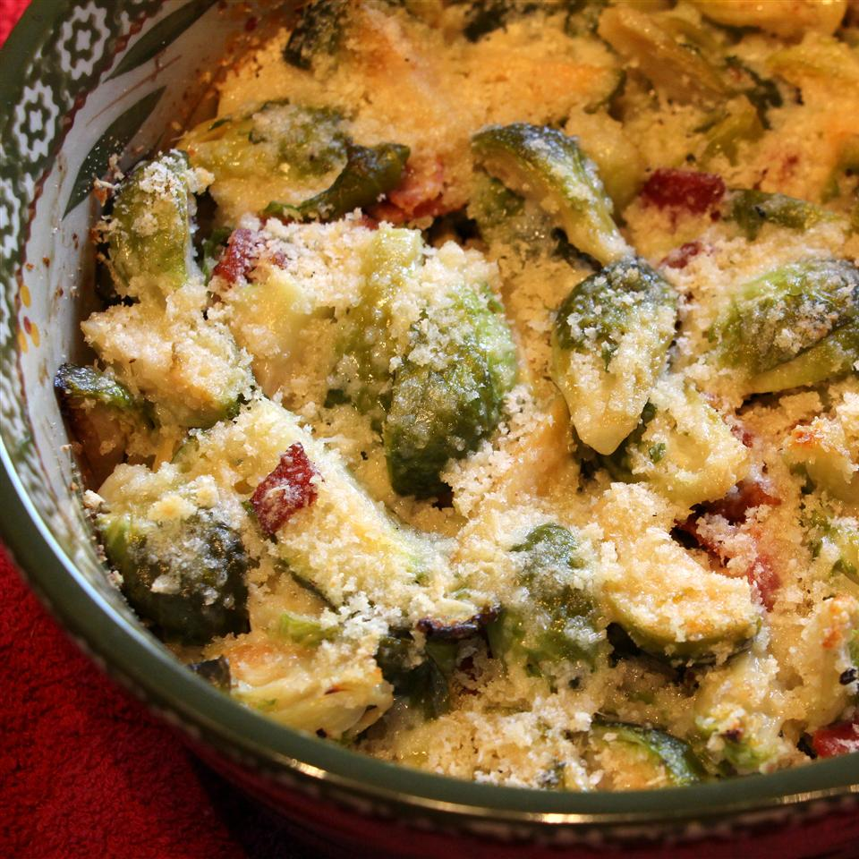

Brussel Sprouts Gratin

Description
A great way to have Brussels sprouts with a little more flair. The cream takes away the bitterness you usually find in Brussels. This is a family favorite during the holidays!
Ingredients
- 1 pound Brussels sprouts, cleaned and trimmed
- 2 slices bacon, cut into 1/2 inch pieces
- salt and ground black pepper, to taste
- 1/2 cup heavy cream
- 1/4 cup bread crumbs
- 1/4 cup grated Parmesan cheese
- 2 tablespoon butter, cut into tiny pieces
Steps
- Preheat an oven to 400 degrees F (200 degrees C). Lightly grease a baking dish.
- Bring a large pot of lightly salted water to a boil. Add the Brussels sprouts and cook uncovered until tender, about 8 minutes. Drain in a colander, then immediately immerse in ice water for several minutes until cold to stop the cooking process. Once the Brussels sprouts are cold, drain well, and cut in halves or quarters, depending on size. Set aside.
- Meanwhile, place the bacon in a large, deep skillet, and cook over medium-high heat, turning occasionally, until limp and lightly browned, about 5 minutes. Reduce heat and stir in the Brussels sprouts. Season with salt and pepper then toss for about 1 minutes to evenly distribute the seasonings. Arrange bacon and Brussels sprouts on the prepared baking dish. Pour cream evenly over the Brussels sprouts, then sprinkle breadcrumbs and Parmesan cheese on top. Distribute pieces of butter over the bread crumbs.
- Bake in the preheated oven until golden brown and heated through, 20 to 25 minutes.
Phew! Step back and take a break! You deserve it. After that, get after making another side dish for you friends and family!